Spider-Man & Friends (2006 - 2011)
| Comic Book | Release Date | Cover |
|---|---|---|
| Spider-Man & Friends #1 King of the Sandcastle |  | |
| Spider-Man & Friends #2 |  | |
| Spider-Man & Friends #3 |  | |
| Spider-Man & Friends #4 |  | |
| Spider-Man & Friends #5 The Dog Washer | 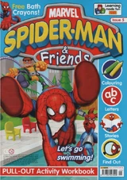 | |
| Spider-Man & Friends #6 Trouble at the Farm |  | |
| Spider-Man & Friends #7 Is It Home Time? | 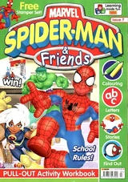 | |
| Spider-Man & Friends #8 The Beast is Blue | 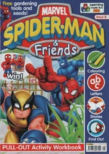 | |
| Spider-Man & Friends #9 The Monster in the Lake | 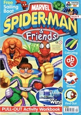 | |
| Spider-Man & Friends #10 Spidey's Hospital Dash | 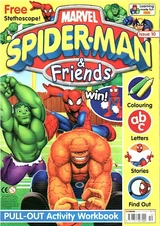 | |
| Spider-Man & Friends #11 Spidey Goes Camping | 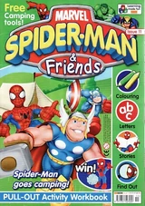 | |
| Spider-Man & Friends #12 Sunken Treasure | 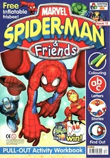 | |
| Spider-Man & Friends #13 The Great Dinosaur Tumble | 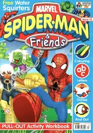 | |
| Spider-Man & Friends #14 Collecting Leaves | 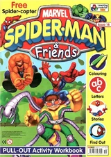 | |
| Spider-Man & Friends #15 Too Many Things to Do! | 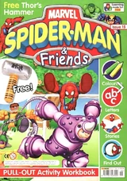 | |
| Spider-Man & Friends #16 Fair Play! | 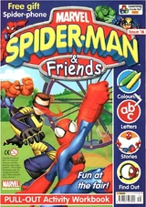 | |
| Spider-Man & Friends #17 A Festive Party! | 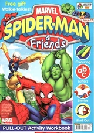 | |
| Spider-Man & Friends #18 In the Snow! | 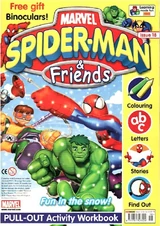 | |
| Spider-Man & Friends #19 Spider-Man's Classroom | 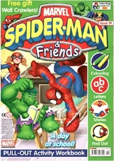 | |
| Spider-Man & Friends #20 Animal Magic! | 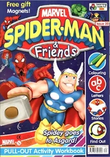 | |
| Spider-Man & Friends #21 The Flying Spaghetti Monster! |  | |
| Spider-Man & Friends #22 Super Speed!! | 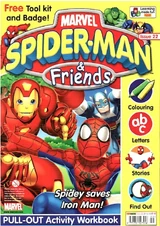 | |
| Spider-Man & Friends #23 The Cave Adventure! | 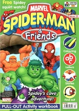 | |
| Spider-Man & Friends #24 I Can't Choose! | 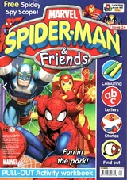 | |
| Spider-Man & Friends #25 Fantastic Golf! | 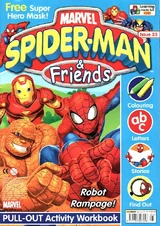 | |
| Spider-Man & Friends #26 Hair Disaster! | 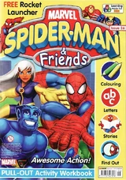 | |
| Spider-Man & Friends #27 Spidey Keeps Fit! | 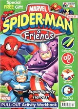 | |
| Spider-Man & Friends #28 Halloween Ghost! | 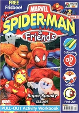 | |
| Spider-Man & Friends #29 Spidey's Painting Adventure! | 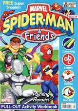 | |
| Spider-Man & Friends #30 Festive Fun! | 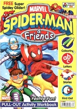 | |
| Spider-Man & Friends #31 Cap's Lost Shield! | 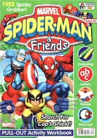 | |
| Spider-Man & Friends #32 The Broken Lighthouse | 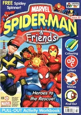 | |
| Spider-Man & Friends #33 How Much Wind? | 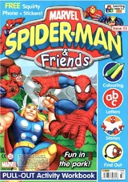 | |
| Spider-Man & Friends #34 The Super Race! | 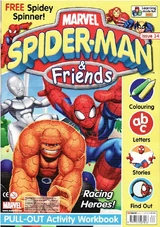 | |
| Spider-Man & Friends #35 The School Paper! | 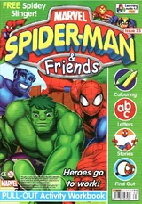 | |
| Spider-Man & Friends #36 Go Fish! | 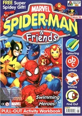 | |
| Spider-Man & Friends #37 The Marvel Circus! | 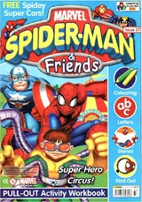 | |
| Spider-Man & Friends #38 Hide and Seek! | 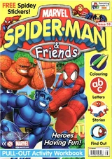 | |
| Spider-Man & Friends #39 The Free Gift! | 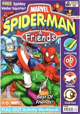 | |
| Spider-Man & Friends #40 Recycling Rhino! | 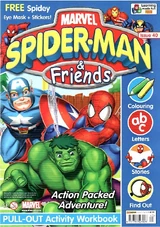 | |
| Spider-Man & Friends #41 The Haunted Mansion! | 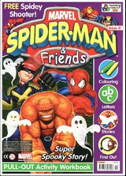 | |
| Spider-Man & Friends #42 Spidey's Hat! | 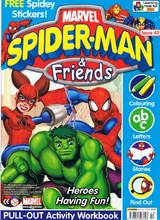 | |
| Spider-Man & Friends #43 Scaredy Cat! | 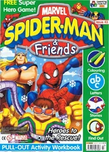 | |
| Spider-Man & Friends #44 Spidey's Winter Games! | 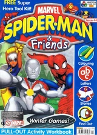 | |
| Spider-Man & Friends #45 The School Test! | 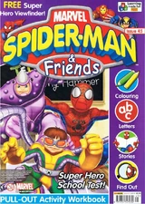 | |
| Spider-Man & Friends #46 Does Rain Stop Play? | 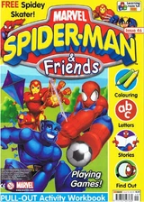 | |
| Spider-Man & Friends #47 The Drip! | 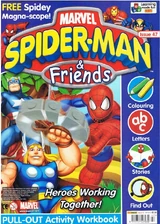 | |
| Spider-Man & Friends #48 Hulk's Big Splash! | 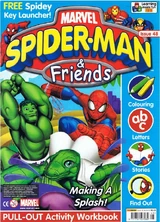 | |
| Spider-Man & Friends #49 The Funny Football Match | 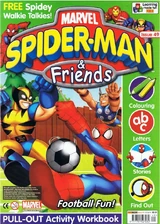 | |
| Spider-Man & Friends #50 Spider-Man's Birthday | 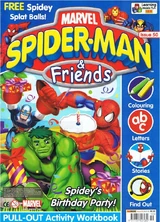 | |
| Spider-Man & Friends #51 The Spaceman! | 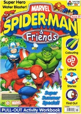 | |
| Spider-Man & Friends #52 The Fire! | 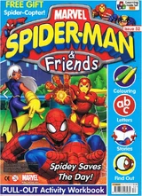 | |
| Spider-Man & Friends #53 Buried Treasure! | 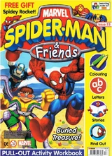 | |
| Spider-Man & Friends #54 No one beats the Hulk! | 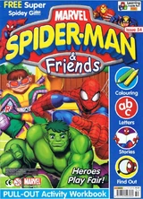 | |
| Spider-Man & Friends #55 Moon-Day! | 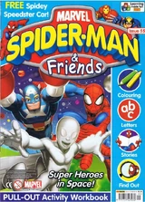 | |
| Spider-Man & Friends #56 The Doc Is Out! | 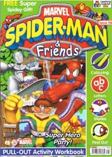 | |
| Spider-Man & Friends #57 Snow Prints! | ||
| Spider-Man & Friends #58 Avalanche Rescue! | ||
| Spider-Man & Friends #59 The Best! | ||
| Spider-Man & Friends #60 In a Fix! | ||
| Spider-Man & Friends #61 Surf's Up! | ||
| Spider-Man & Friends #62 Danger-saur! | ||
| Spider-Man & Friends #63 Out of Reach! | ||
| Spider-Man & Friends #64 The Perfect Power! | ||
| Spider-Man & Friends #65 Sports Day! | ||
| Spider-Man & Friends #66 Training Day! |